Dermatite Seborreica
40 imagens clínicas · toque para ampliar

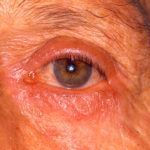

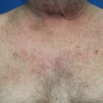

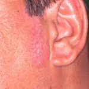

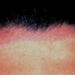

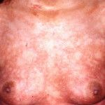

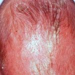

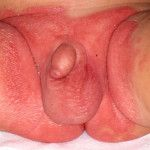


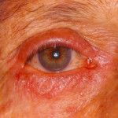

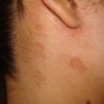

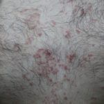

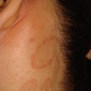

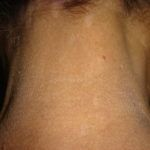

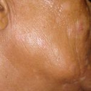

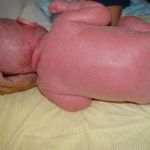

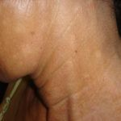

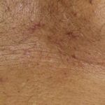

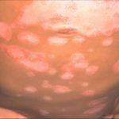

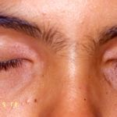

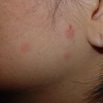

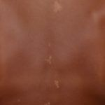

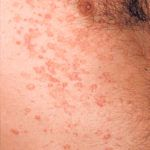

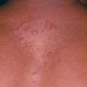

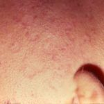

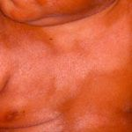

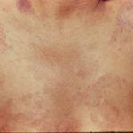

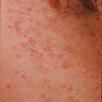


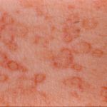

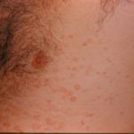

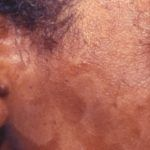

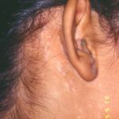

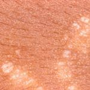

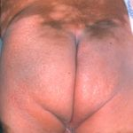

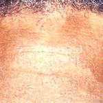

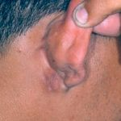

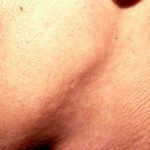

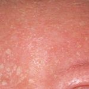

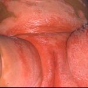

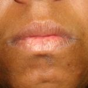
Texto da doença
Epidemiologia, quadro clínico, diagnóstico e tratamento de Dermatite Seborreica, e como a Skin Prime pode ajudar.
Imagens clínicas de caráter educativo. Não substituem a avaliação de um dermatologista.